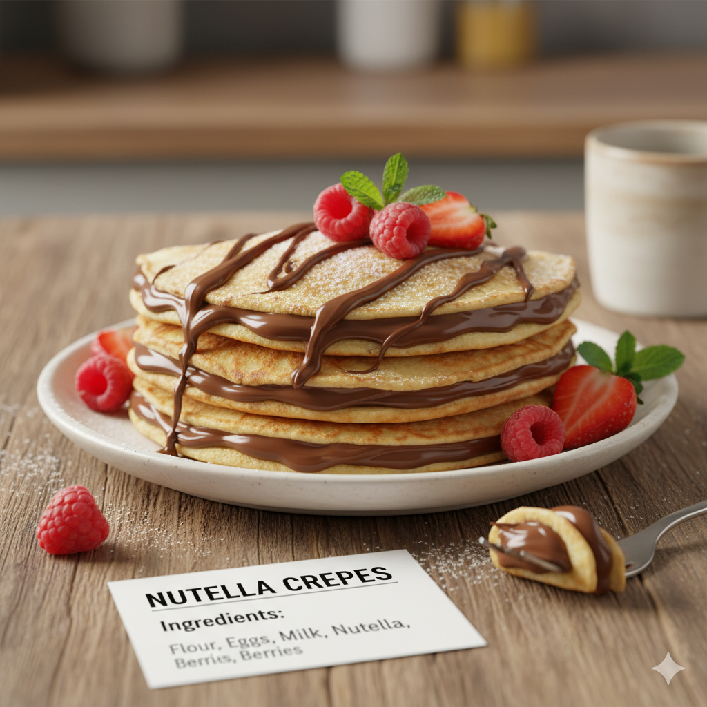

Nutella Crepes
Home

Description
Awaken your inner child with this simple, elegant, and utterly irresistible dessert! Our Nutella Crepes are the definition of an indulgent treat. Crafted from a batter as delicate and thin as lace, they are cooked to perfection before being generously spread with the world's most famous hazelnut and chocolate spread. As you fold them, the inside warms up and the chocolate melts, offering a smooth, sweet, and comforting experience. They're perfect for a special breakfast, a relaxed brunch, or a late-night craving.
Ingredients
- 1 cup all-purpose flour
- 2 large eggs
- ½ cup milk
- ½ cup water
- ¼ tsp salt
- 2 tbsp butter, melted
- Nutella for filling
- Powdered sugar or fresh fruit for topping (optional)
Instructions
- Whisk together the flour, eggs, milk, water, and salt until smooth. Stir in the melted butter.
- Heat a non-stick pan over medium heat. Pour about ¼ cup of batter, swirling to create a thin circle.
- Cook for about 1 minute per side, or until the edges brown slightly.
- Spread a generous amount of Nutella over one half of the crepe.
- Fold it in half, and then into a triangle. Serve warm with toppings if desired.